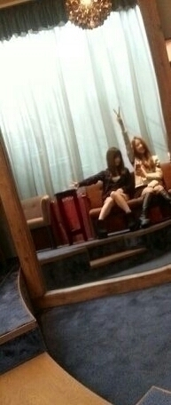

| 2013/10 26 Sat | 流行り物にあまり乗らないけど、 今流行りのローファーが欲しいと思うん だ(о´∀`о)。ニ カッRotty |
は〜い おはよ〜☆ Rottyだよ〜
昨日は せーらと約束していた
美容院に行ってきました！
トリートメントは とぅるんとぅるるん♪
それに5センチ程カットしたの
プラスぅ〜？？？
黒髪Rottyになりましたぁ〜\(*´ω｀*)/
わっふぁ〜い ))

とーいなー!!笑
明日は 写真集お渡し会もあるしねーん。
明日 お渡し会当たった方は
黒髪ろってぃ-を見れる あは
是非観察して帰ってください(*´∇｀*)
ニヤり。よろちくん。
そして その後は晩御飯。
食べ放題！！焼き肉！！！
いつも大勢で行くからその勢いで
注文したら2人やったから
本当 お腹いっぱい いっぱいなった
(>∨<)アチャパー
でも おいちかったし
いっぱい食べな損やからいいや〜(*´ω｀*)
その後 せっちゃんと合流したんだけど
まひろは 仕事あってさよなら〜
１人会社へ〜(*´ω｀*)♪
ワンコ達とぱしゃり ..

わんわん。 やっぱ犬は可愛い。
のし。 ろってぃ-でした。
コメント(140)
2013/10/26 00:30